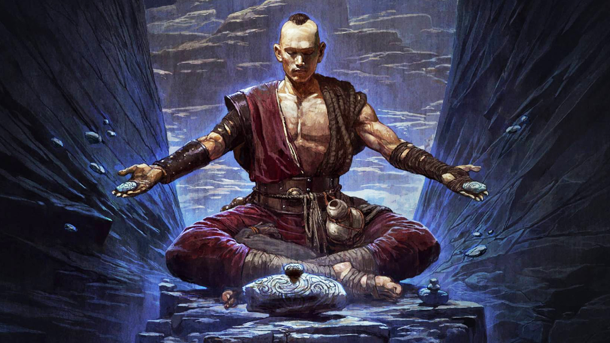

MONK
Master of Martial Arts and Spiritual Invocation
The Monk is a spiritual warrior who masters both physical combat and mystical invocation in Path of Exile 2. Using fist weapons or fighting unarmed, he channels divine energy and calls upon spiritual entities to aid in battle.
Specializing in invocation rituals, spiritual energy manipulation, and disciplined combat, Monks excel at summoning allies, channeling divine power, and maintaining balance between the physical and spiritual realms. Their playstyle revolves around ritual preparation, spirit management, and adaptive combat techniques.
With the ability to invoke powerful spirits, channel divine wrath, and commune with otherworldly entities, the Monk bridges the gap between mortal combat and spiritual warfare in Wraeclast.

Monk Abilities
Spirit Palm
Spiritual Strike
Channel spiritual energy into a palm strike that deals physical and chaos damage. Has a chance to summon a minor spirit on critical hit.
Invocation Circle
Ritual Area
Create a ritual circle that empowers your spiritual abilities and slowly summons minor spirits to fight for you while you remain within it.
Divine Retribution
Counter & Buff
Counter Chaos Buff
Spirit Walk
Movement & Spiritual
Briefly become ethereal, passing through enemies and leaving behind spiritual echoes that damage foes. Cannot be targeted while ethereal.
Monk Ascendancy Classes

INVOKER
Master of Spiritual Summoning
The Invoker specializes in summoning and commanding spiritual entities, calling upon ancestors, nature spirits, and divine manifestations to aid in battle. Masters ritual circles and spiritual pacts.
Key Features
- Summon powerful ancestral spirits
- Ritual circles with enhanced effects
- Spirit command for tactical control
- Spiritual pacts for power exchange
- Ancestral knowledge for skill bonuses
- Spirit fusion for temporary empowerment
ACOLYTE OF CHAYULA
Devotee of the Beast
The Acolyte of Chayula has dedicated themselves to the eldritch god Chayula, gaining chaos powers and otherworldly abilities. Masters chaos energy, madness manipulation, and embracing forbidden divinity.
Key Features
- Chaos damage conversion and penetration
- Madness effects that confuse enemies
- Otherworldly transformation abilities
- Chayula's blessings for unique powers
- Chaos resistance and immunity to stun
- Eldritch knowledge for forbidden skills